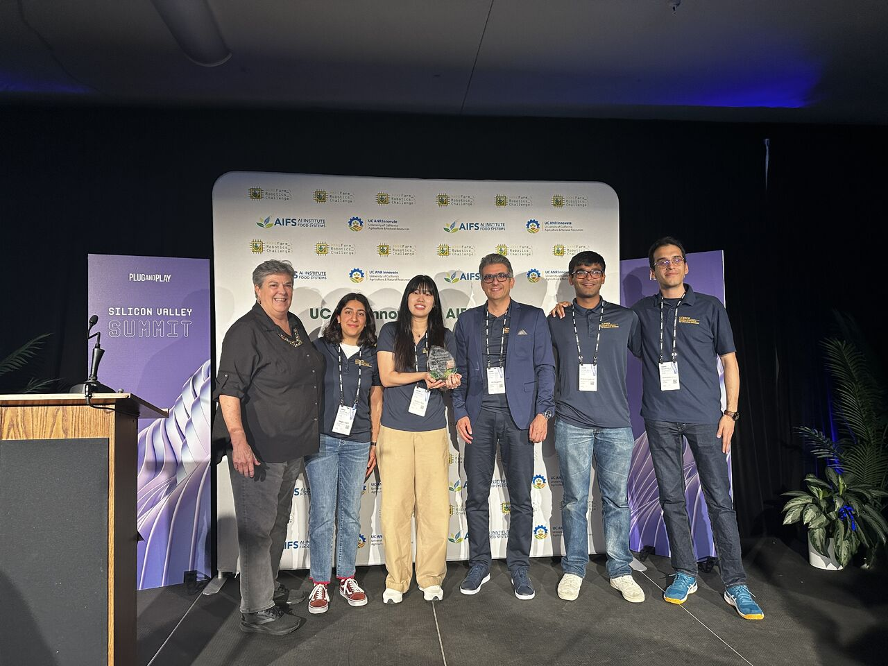
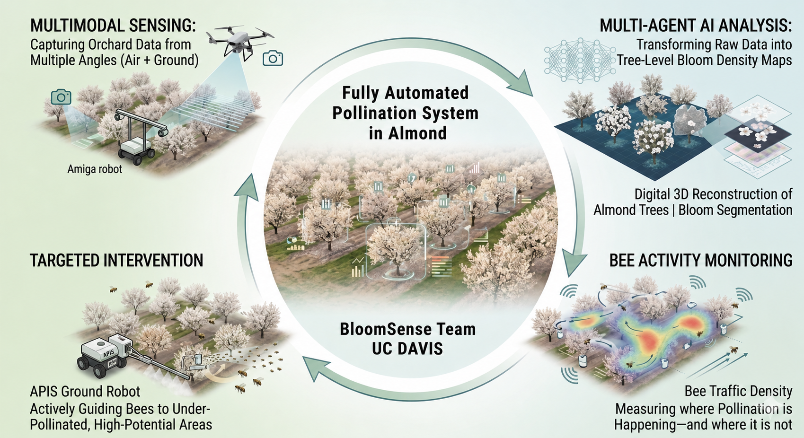
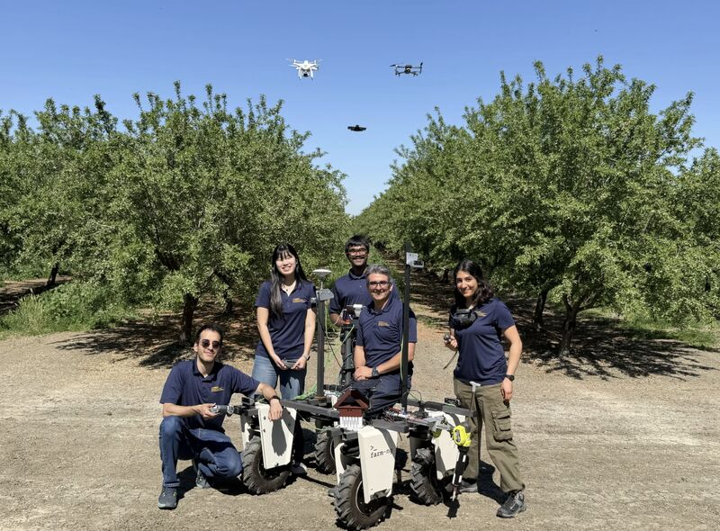

🏆 Excellence in Specialty Crops Award – Farm Robotics Challenge 2026
Team Advisor: Dr. Ali Moghimi
Students: Mohammadreza Narimani, Inseon Kim, Krishna Aggarwal, Negar Agah
UC Davis Biological and Agricultural Engineering
The Achievement
I am immensely proud to share that our Aggie Aerial-Ground Robotics team from UC Davis won the prestigious Excellence in Specialty Crops Award (Division I), presented by Western Growers, at the Farm Robotics Challenge 2026. Held at the USA Plug and Play Summit, this global challenge brought together 96 teams from around the world to present AI-based solutions that modernize agriculture.
Our team is dedicated to bringing mechanization, robotics, and artificial intelligence to agriculture. We strongly believe that these technologies can fill critical gaps in the industry, support growers, and pave the way for more efficient and sustainable food production on a global level.

Honored to receive the Excellence in Specialty Crops Award at the USA Plug and Play Summit.
Project BloomSense: Our Award-Winning Solution
For the challenge, we developed BloomSense, an advanced robotic system that combines orchard-scale UAV mapping with multi-angle in-canopy imagery captured by an Amiga ground robot. This robust approach produces highly accurate bloom density estimates across varied lighting and canopy structures.
- Aerial Layer (UAV): Captures whole-block structure and spatial bloom distribution.
- Ground Layer (Amiga Robot): Drives the rows to gather close-range inside-canopy imagery where aerial vision is limited.
- Data Fusion: The two data streams merge into a unified, high-resolution bloom density map.
- Actionable Insights for Growers: Provides repeatable, early-season measurements that inform pollination strategies, advanced nitrogen planning, and yield-potential assessments in almonds, apples, and other specialty tree crops.

Watch Project BloomSense in Action
Our official competition entry effectively outlines our approach with the Amiga robot platform and UAV fusion techniques.
Video source cited from Farm Robotics Challenge 2026 Winners
Acknowledgements & Media Coverage
A very special thank you to our advisor, Dr. Ali Moghimi, for his guidance, support, and dedication. He was not only supervising us but also spending long hours alongside us in the lab and in the field, always motivating us to move forward.
Special thanks to the University of California, Davis, the UC Davis Biological and Agricultural Engineering Department, and Dr. Fadi Fathallah for their support and encouragement throughout this journey.
Finally, thank you to the organizers at UCANR Innovate and the AI Institute for Next Generation Food Systems (AIFS) for this amazing opportunity to be 'boots on the ground' for agriculture. We also extend our huge thanks to industry partners: Plug and Play, RESERVOIR, Western Growers, and Bonsai Robotics.

Aggie Aerial-Ground Robotics Team posing by the Amiga robot.
Read the Official Coverage
Proud to be an Aggie and excited to keep working toward the future of agriculture.
Go Aggies! 💙💛